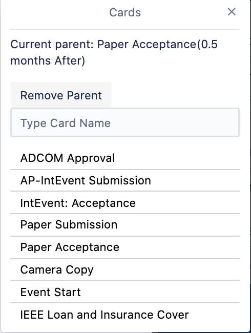
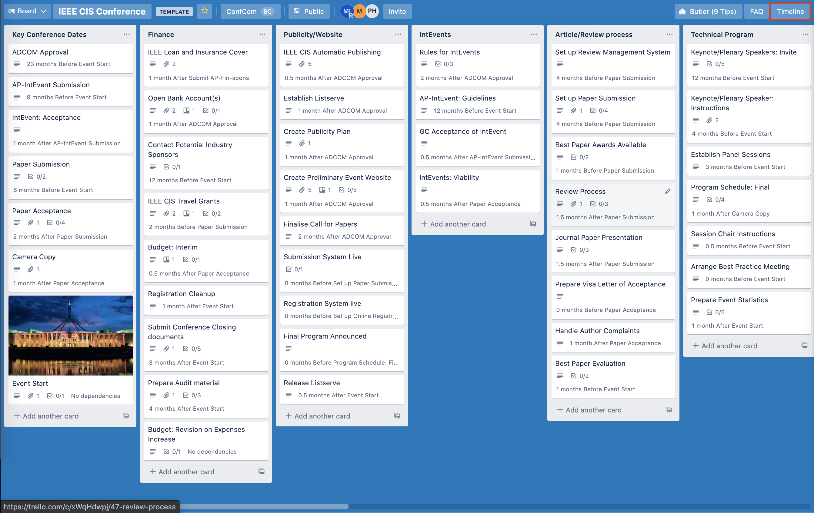
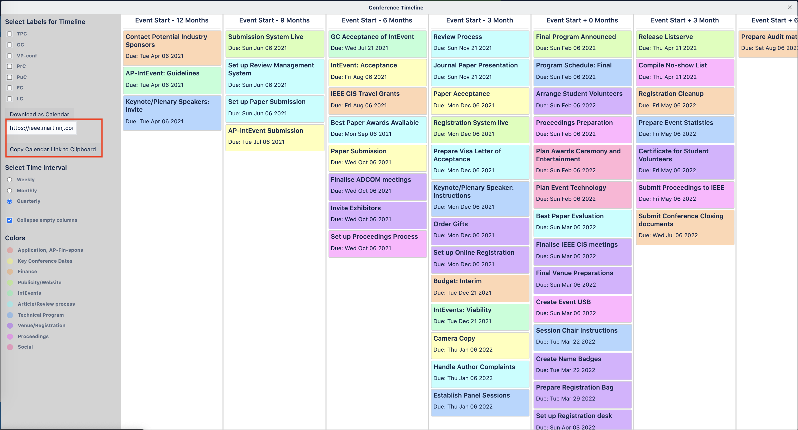

Why IEEE CIS chose Trello.
Adding a new team member to a board is done by clicking the invite button in the board's toolbar. There are two different member roles available, observer and member. A member will be able to edit, comment and invite other people to the board, while an observer is only able to view and comment. It is useful to keep the number of members limited, otherwise a board's content may be hard to keep track of. For the IEEE CIS Conferences it will be useful to only have a few members, as there are many cards and limiting the number of people with edit permission will make it easier for the General Chair to have an overview of the board.
It is useful for people to know who is responsible for a specific task throughout the planning of the event, and assigning a card to a specific team member is a great way of doing that. A member type user can assign a specific card to one of the board's members, regardless of the member being an observer or a member. When someone is assigned a card, that member will automatically receive notifications when changes are made to that card. This also gives that team member an overview over their specific tasks and can plan accordingly.
Labels in Trello is a way of grouping categories of cards together. In the IEEE CIS Conference template labels are used to group cards that are related to a specific chair's tasks. All the financial type cards will have the FC label, and so forth. This makes it easier to assign tasks to team member within the chair's team.
Trello allows searching and filtering among the board's cards. By typing
f or clicking the Search cards button in the menu, a list of search
parameters will become available. It is possible to search for specific
cards, but also to search for labels, team members or due date. This
feature is especially useful for the specific chairs. The IEEE CIS
Conference Template has a lot of cards, and allowing to filter away
unrelated cards makes it a little less overwhelming for the chair. It
also gives the chair an overview of their team's task distribution.
The relative due date power-up was created to allow a card's due date to be dependent on another. If the parent card's due date changes, the original card's will also change. That way a General Chair only needs to set the due date of the conference's start date and all tentative dates will be set on the cards that are depending on that card. Almost all the cards in the IEEE CIS Conference Template will have a relative due date, but it is also possible to change som dependencies if that works better for conference planning.
Adding, changing or removing a parent card is easy. By clicking on the
Relative Due Date button inside the card (see image below).
This will open a popup in which you can search for the parent card. You can also remove a parent if applicable.
By clicking one of the card names that appear, you will be prompted to define the difference between the parent card and the original card. The difference is how many months before or after the due date of the parent card, the original card's due date will be. If the parent card has a due date, the due date of the original card will change according to the difference set. If the original card has cards that are dependant on it, their due dates will also change.
The IEEE CIS Conference Template can be a little overwhelming, and getting a general timeline of when things happen can be hard by looking a the Kanban board. Therefore, we created a timeline visualization of the cards on your board. The timeline can be opened by clicking the timeline button on the boards toolbar (see picture) or by clicking the timeline button inside a card.
The timeline can be grouped by week, month or quarterly depending on how compact you want the timeline too look. You can also define the different labels that are shown in the timeline by clicking the cehckboxes in the sidebar.
When the date for the conference has been set, a calendar file for the event can be downloaded for the conference. Inside the timeline, you will get the option to download an `ics` file that can be imported to your personal calendar containing the different cards on the board. If you only want the cards that are relevant for a specific label, you can check the boxes and then download the calendar.
If you want a calendar that is always up to date with the latest changes to the board, you can subscribe to the calendar by copying the url below the download button in the sidebar.
